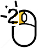

QuickRNAseq: User Guide
How to run QuickRNASeq pipeline from scratch
Prerequisites
The following open source should be downloaded and installed
1. download STAR from https://github.com/alexdobin/STAR/releases
2. install SUBREAD packages http://subread.sourceforge.net/
3. download JAR file from http://varscan.sourceforge.net/
4. download and install RSeQC from http://rseqc.sourceforge.net/
5. download and install samtools from http://sourceforge.net/projects/samtools/files/
To set the following software related parameters in configuration file. samtools is assumed
to be in your system path since it is a basic utility tool for NGS data analysis.
STAR_RNA=/hpc/grid/shared/ngsapp/STAR_2.4.0k/bin/Linux_x86_64
FEATURECOUNTS=/hpc/grid/shared/ngsapp/subread-1.4.6/bin
RSeQC=/afs/grid.pfizer.com/mm/proj01/app/python/bin
VARSCAN_JAR=/hpc/grid/shared/ngsapp/bin/VarScan.v2.4.0.jar
#
## preparation geneome/annotation/index for RNA-seq data analysis
#
An example on how to create GRCh38_Gencode23 index for RNA-seq data analysis step by step
a. download genome Fastq ftp://ftp.sanger.ac.uk/pub/gencode/Gencode_human/release_23/GRCh38.primary_assembly.genome.fa.gz
b. download gene annotation in GTF: ftp://ftp.sanger.ac.uk/pub/gencode/Gencode_human/release_23/gencode.v23.annotation.gtf.gz
c. unzip and rename genome and GTF as: GRCh38.primary.genome.fa, GRCh38.gencode.v23.gtf and
put them in the corresponding project data folder
d. prepare annotation and BED files using utility functions in QuickRNASeq
1). gtf2bed.pl GRCh38.gencode.v23.gtf > GRCh38.gencode.v23.bed
2). gtf2annot.pl GRCh38.gencode.v23.gtf > GRCh38.gencode.v23.annot
3). samtools faidx GRCh38.primary.genome.fa
f. create genome index as below:
/hpc/grid/shared/ngsapp/STAR_2.4.0k/bin/Linux_x86_64/STAR \
--runThreadN 32 --runMode genomeGenerate --genomeDir /hpc/grid/shared/ngsdb/STAR/GRCh38_gencode23_100 \
--genomeFastaFiles /hpc/grid/shared/ngsdb/fasta/GRCh38.primary.genome.fa --sjdbGTFfile \
/hpc/grid/shared/ngsdb/annotation/gencode/GRCh38.gencode.v23.gtf --sjdbOverhang 99
g. To set the following reference geneome related parameters in configuration file
GENOME_FASTA=/hpc/grid/shared/ngsdb/fasta/GRCh38.primary.genome.fa
GENOME_INDEX=/hpc/grid/shared/ngsdb/STAR/GRCh38_gencode23_100
GENOME_ANNOTATION=/hpc/grid/shared/ngsdb/annotation/gencode/GRCh38.gencode.v23.annot
GTF_FILE=/hpc/grid/shared/ngsdb/annotation/gencode/GRCh38.gencode.v23.gtf
BEDFILE=/hpc/grid/shared/ngsdb/annotation/gencode/GRCh38.gencode.v23.bed
CHR_REGION=chr6:1-170805979
Prepare RNA-seq data
a. prepare a sample annotation file and sample ID file
1) sample ID file, an unique ID per line. Assume the suffix of fastq files is fq.gz
and its corresponding fastq files are:
sample_id_1.fq.gz
sample_id_2.fq.gz.
2) sample annotation file:
column #1: sample_id
column #2: subject_id
column #3--#n (optional)
For clinical RNA-seq, samples from the same subject should be assigned to the same subject_id.
!!!NOTE!!!:
QuickRNASeq can be run without a sample annotation, but it is strongly recommended that
a user should provide meaningful annotations for all samples. A proper annotation file
should be tab delimited, and QuickRNASeq requires the first and second columns correspond
to sample and subject identifiers, respectively. A sample name should start with a letter,
and does not contain any white space in the middle
b. To set the following parameters in your configuration file
# directory for FASTQ files
FASTQ_DIR=/hpc/grid/ngsws/molmed/data/QuickRNASeq/fastq
# suffix for fastq files: fq.gz or fastq.gz or fastq or fq
FASTQ_SUFFIX=fq.gz
# stranded or nonstranded. #0: nonstranded; 1: forward strandness; 2: reverse strandness
STRAND=0
# sequencing type: pair or single
SEQUENCE_TYPE=pair
# sequencing depth #regular: 40-80M; #deep: >100M
SEQUENCE_DEPTH=regular
# COMPREHENSIVE_QC: true if performed; false if no individual sample QC
COMPREHENSIVE_QC=true
#log directory
LOGDIR=/hpc/grid/scratch/$USER/log
Sample configuration file
Note:
Please refer to star-fc-qc.config.template for more details
You can copy star-fc-qc.config.template in QuickRNASeq package to your
project folder and then customize it to your environment
########################################################################
#
# RNA-seq project related information
#
FASTQ_DIR=/hpc/grid/ngsws/molmed/data/QuickRNASeq/fastq
FASTQ_SUFFIX=fq.gz
STRAND=0
SEQUENCE_DEPTH=regular
SEQUENCE_TYPE=pair
COMPREHENSIVE_QC=true
LOGDIR=/hpc/grid/scratch/$USER/log
#
## Species-specific GenomeIndex and GTF
## Usually, you DON'T need to modify them unless a different geneome/annotation is used
#
GENOME_FASTA=/hpc/grid/shared/ngsdb/fasta/GRCh38.primary.genome.fa
GENOME_INDEX=/hpc/grid/shared/ngsdb/STAR/GRCh38_gencode23_100
GENOME_ANNOTATION=/hpc/grid/shared/ngsdb/annotation/gencode/GRCh38.gencode.v23.annot
GTF_FILE=/hpc/grid/shared/ngsdb/annotation/gencode/GRCh38.gencode.v23.gtf
BEDFILE=/hpc/grid/shared/ngsdb/annotation/gencode/GRCh38.gencode.v23.bed
CHR_REGION=chr6:1-170805979
#
##Software locations
## Usually, you DON'T need to modify them unless you update packages
#
STAR_RNA=/hpc/grid/shared/ngsapp/STAR_2.4.0k/bin/Linux_x86_64
FEATURECOUNTS=/hpc/grid/shared/ngsapp/subread-1.4.6/bin
RSeQC=/afs/grid.pfizer.com/mm/proj01/app/python/bin
VARSCAN_JAR=/hpc/grid/shared/ngsapp/bin/VarScan.v2.4.0.jar
Process individual sample: mapping, counting and QC
Note:
1. This step is computationally intensive
2. Under the project folder, there is a separate result folder for each sample
########################################################################
export QuickRNASeq={QuickRNASeq_installation_Directory}
export PATH=$QuickRNASeq:$PATH
star-fc-qc.sh allIDs.txt project_configuration_file
#run the following command if you run the analysis on a standalone workstation
#star-fc-qc.ws.sh allIDs.txt project_configuration_file
!!!NOTE!!!:
The out-of-box QuickRNASeq is fully tested in a HPC cluster using IBM Platform LSF
(Load Sharing Facility), a powerful workload management platform for demanding, distributed
HPC environments. IBM Platform LSF provides a comprehensive set of intelligent,
policy-driven scheduling features that enable you to utilize all of your compute
infrastructure resources and ensure optimal application performance. In addition to
LSF, there is a list of notable job scheduling software available. For a cluster
using a job scheduler other than LSF, star-fc-qc.sh (implementation of Step #1 in
Figure 1) needs to be twisted or modified.
For those people who have no access to a HPC cluster, we offer star-fc-qc.ws.sh, a
customized script working in a standard Linux workstation. Of course, to analyze a
large RNA-seq dataset in a single workstation is not typical.
#run the following command if you don't perform comprehensive QC for individual sample
#star-fc.sh allIDs.txt project_configuration_file
#It's better to set COMPREHENSIVE_QC to false in your configuration file and call star-fc-qc.sh
#run the following command if you run the analysis on a standalone workstation
#star-fc-qc.ws.sh allIDs.txt project_configuration_file
Merge results from individual samples and generate an integrated report
Note:
1. Please run this command under the project folder.
2. If sample_annotation_file is not provided, a mock annotation will be generated.
########################################################################
export GENOME_ANNOTATION=/hpc/grid/shared/ngsdb/annotation/gencode/GRCh38.gencode.v23.annot
star-fc-qc.summary.sh allIDs.txt sample_annotation_file[optional]
#bsub -app large "star-fc-qc.summary.sh allIDs.txt sample.annotation.txt &> Results.log"
#run the command linebelow if no individual sample QC or you run the analysis in a workstation
#star-fc.summary.sh allIDs.txt sample_annotation_file[optional]
QuickRNASeq test run
Please refer to $QuickRNASeq/test_run folder for:
1. allIDs.txt: sample identifiers
2. sample.annotation.txt: annotation file
3. GTEx.config: sample configuration file
4. master-cmd.sh: command lines for test runs
Note: run step #1 after step #1 finishes
Adjust QuickRNASeq to point to QuickRNASeq installation folder
Please ALSO refer to $QuickRNASeq/star-fc-qc.config.template to create your own project
specific configuration file.
Descriptions on data and figure summary files
sample.annotation.txt sample annotation file star-mapping-summary.txt read mapping summary for STAR run fc-counting-summary.txt read counting summary for featureCounts run RSeQC-read-distribution.txt The distribution of mapped reads along gene elements Gene-count-table.txt counting table Gene-count-table.flt.txt filtered counting table. A gene is filtered if having 0 read in more than 50% samples Gene-fpkm-table.txt RPKM table, calculated from Gene-count-table.txt Gene-fpkm-table.flt.txt filtered RPKM table, calculated from Gene-count-table.flt.txt RNASeq-expr-QC.txt correlation based QC of expression profile RNASeq-expr-corr.txt All-against-all gene expression correlation matrix RNASeq-snp-corr.txt All-against-all SNP correlation matrix RNASeq-merged-metrics.txt Merged RNA-seq metrics from mapping, counting, distribution and QC read_map_sum.10x7.png plot of star-mapping-summary.txt. Intended for powerpoint presentation. read_map_sum.png plot of star-mapping-summary.txt. Intended for interactive HTML presentation. read_count_sum.10x7.png plot of fc-counting-summary.txt. Intended for powerpoint presentation. read_count_sum.png plot of fc-counting-summary.txt. Intended for interactive HTML presentation. read_dist_sum.10x7.png plot of RSeQC-read-distribution.txt. Intended for powerpoint presentation. read_dist_sum.png plot of RSeQC-read-distribution.txt. Intended for interactive HTML presentation. expr_count_RPKM.10x7.png plot the number of genes with a give RPKM cutoff. Intended for powerpoint presentation. expr_count_RPKM.png plot the number of genes with a give RPKM cutoff. Intended for interactive HTML presentation. RNASeq-expr-corr.txt.corr.9x7.png correlation plot for RNASeq-expr-corr.txt.Intended for powerpoint presentation. RNASeq-expr-corr.txt.corr.png correlation plot for RNASeq-expr-corr.txt.Intended for interactive HTML presentation. RNASeq-snp-corr.txt.corr.9x7.png correlation plot for RNASeq-snp-corr.txt.Intended for powerpoint presentation. RNASeq-snp-corr.txt.corr.png correlation plot for RNASeq-snp-corr.txt.Intended for interactive HTML presentation.
Explore integrated and interactive report
Open the index.html file under Results folder and you will have access to all data
and figures, and drill down RNA-seq analysis results in an interactive way.
Meaning of mouse icons
Left click to interactive plot
Left click
Right click
 Double left click
Scroll middle wheel
Create a boxplot for one gene
Step 1: Click on the "pointing hand" icon on the master report HTML page to get to gene expression table.

Step 2: Search by keyword and then left click on any column except the first two on a gene.

Step 3: Now you should see dot plot to show gene expression level in RPKM value on all samples

Step 4: Right click on any plot area to bring up the drop down menu for sample grouping, data transformation and chart customization

Step 5: Group samples by following menu "Group Samples" and then select features you want samples to be grouped upon for box plot. The sample features are gathered from the optional "sample.annotation.txt" file under "Summary" directory.

Step 6: Click on any plot area to remove the menu and you should see a boxplot.

Step 7: Data can be transformed to various scales by right click on the plot to bring up the menu and then follow "Data" -> "Transform" -> "Log Base 2" for log2 transformation

Step 8: The chart can also be customized in many ways. For example, The font of sample labels will be enlarged by following "Customize" -> "Sample Labels" -> "Font" -> "Bigger". The more you click on the "Bigger" button, the larger the font becomes.

Step 9: Add y-axis title by following "Customize" -> "Axes Titles" -> "Text". Type in title in the input box and then click the nearby cycling button.
Step 10: The size of Window and Canvas can be changed by click-and-drag the left bottom corner as indicated by the black arrows. Follow "Data Points Attributes" -> "Color by" to color data points based on a feature.

Step 11: Move mouse up to the top of the canvas to activate the top menu, click on the "Camera" button to get a nice png image for publication.

Step 2: Search by keyword and then left click on any column except the first two on a gene.
Step 3: Now you should see dot plot to show gene expression level in RPKM value on all samples
Step 4: Right click on any plot area to bring up the drop down menu for sample grouping, data transformation and chart customization
Step 5: Group samples by following menu "Group Samples" and then select features you want samples to be grouped upon for box plot. The sample features are gathered from the optional "sample.annotation.txt" file under "Summary" directory.
Step 6: Click on any plot area to remove the menu and you should see a boxplot.
Step 7: Data can be transformed to various scales by right click on the plot to bring up the menu and then follow "Data" -> "Transform" -> "Log Base 2" for log2 transformation
Step 8: The chart can also be customized in many ways. For example, The font of sample labels will be enlarged by following "Customize" -> "Sample Labels" -> "Font" -> "Bigger". The more you click on the "Bigger" button, the larger the font becomes.
Step 9: Add y-axis title by following "Customize" -> "Axes Titles" -> "Text". Type in title in the input box and then click the nearby cycling button.
Step 10: The size of Window and Canvas can be changed by click-and-drag the left bottom corner as indicated by the black arrows. Follow "Data Points Attributes" -> "Color by" to color data points based on a feature.
Step 11: Move mouse up to the top of the canvas to activate the top menu, click on the "Camera" button to get a nice png image for publication.
Create a heatmap for genes
Step 1: Type in or select genes from the above table. Click on "Plot" when it is ready.

Step 2: Right click on any plot area to bring up the drop down menu for sample grouping, data transformation and chart customization

Step 3: Sort samples by following menu "Data" -> "Sort Samples" -> "By Sample Category" and then select features you want samples to be sorted. The sample features are collected from the optional "sample.annotation.txt" file during pipeline run.

Step 4: Data can be transformed to various scales by right click on the plot to bring up the menu and then follow "Data" -> "Transform" -> "Log Base 2" for log2 transformation

Step 5: The chart can be customized in many ways. For example, The font of sample labels will be enlarged by following "Customize" -> "Variable Labels" -> "Font" -> "Bigger". The more you click on the "Bigger" button, the larger the font becomes.

Step 6: The size of Window and Canvas can be changed by click-and-drag the left bottom corner as indicated by the black arrows.

Step 7: Move mouse up to the top of the canvas to activate the top menu, clicak on the "Camera" button to get a nice png image for publication.

Step 2: Right click on any plot area to bring up the drop down menu for sample grouping, data transformation and chart customization
Step 3: Sort samples by following menu "Data" -> "Sort Samples" -> "By Sample Category" and then select features you want samples to be sorted. The sample features are collected from the optional "sample.annotation.txt" file during pipeline run.
Step 4: Data can be transformed to various scales by right click on the plot to bring up the menu and then follow "Data" -> "Transform" -> "Log Base 2" for log2 transformation
Step 5: The chart can be customized in many ways. For example, The font of sample labels will be enlarged by following "Customize" -> "Variable Labels" -> "Font" -> "Bigger". The more you click on the "Bigger" button, the larger the font becomes.
Step 6: The size of Window and Canvas can be changed by click-and-drag the left bottom corner as indicated by the black arrows.
Step 7: Move mouse up to the top of the canvas to activate the top menu, clicak on the "Camera" button to get a nice png image for publication.
How to make the report publically available at github.com
Create a repository by login github.com
Note: if you don't have a github account, create one first by click the link.
Step 1: Click on the "New repository" icon.

Step 2: Type in project name sunce as RNASeq_1 and description and then click "Create repository" icon at bottom of the page

Commands to add the report files to github repository
git clone https://github.com/username/RNASeq_1.git cd RNASeq_1 git checkout --orphan gh-pages cp -R path2result/Results/* . git add . git commit -a -m "Adding index.html" git push origin gh-pagesNow, the report is available at http://username.github.io/RNASeq_1 .